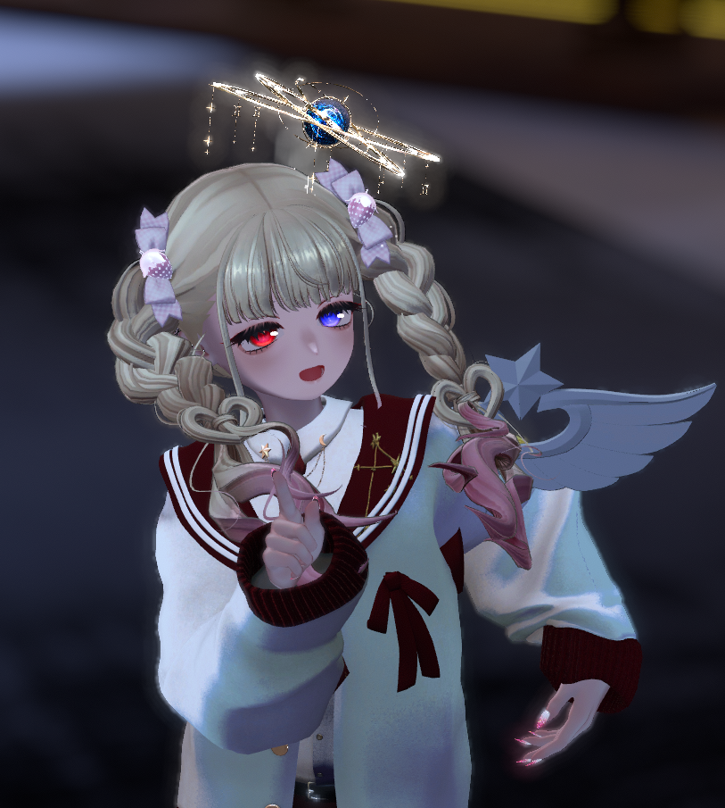

ふたご座の星導
アナスタシア（アーニャ）
弟を愛し、弟と生きることを選んだ、ふたご座のお兄ちゃん。
星座
ふたご座のお兄ちゃんだよ！ えっ？ 男の子に見えないって？
えへへ～！ ボク、かわいいでしょ～！
えへへ～！ ボク、かわいいでしょ～！
どんな星導
弟のシエルを誰よりも大切に想う、明るく人懐っこい星導。
来訪者へ甘い言葉を投げかけながら、自分だけの運命の王子さまを探している。
かわいらしい笑顔の奥には、弟への深い愛情と、運命への強い憧れを秘めている。
来訪者へ甘い言葉を投げかけながら、自分だけの運命の王子さまを探している。
かわいらしい笑顔の奥には、弟への深い愛情と、運命への強い憧れを秘めている。
願い
弟のシエルを蘇らせてもらったの。
そして、これからもずっと一緒にいられることが願い、かな。
そして、これからもずっと一緒にいられることが願い、かな。
一言
「こんばんは、来訪者さん♡
キミはボクの運命の王子さま……なのかな？」